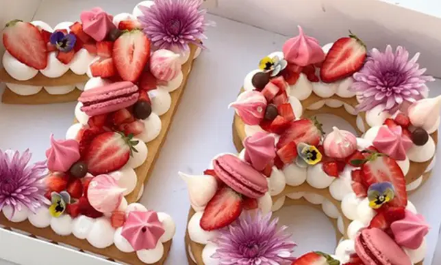
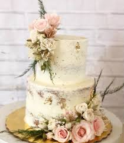

PASTELES
PASTELES Y TIPOS
¿Qué es un pastel? Un pastel es un postre horneado o frío que se elabora con una base de harina, azúcar, huevos y algún tipo de grasa (como mantequilla o aceite). Se puede aromatizar con vainilla, cacao, frutas, café, especias y rellenar o decorar con crema, glaseado, fondant, frutas o frutos secos. Los pasteles pueden variar desde versiones simples (como un bizcocho de vainilla) hasta elaboradas creaciones con varias capas y diseños decorativos.

Tipos de Pasteles más populares Pastel de chocolate: Esponjoso, húmedo y amado por muchos. Cheesecake: Con base de galleta y relleno de queso crema, puede ser horneado o frío. Tres leches: Pastel empapado en leche condensada, evaporada y crema. Red Velvet: De color rojo intenso, con sabor suave a cacao y glaseado de queso crema. Tarta de frutas: Con una base de masa y relleno de frutas frescas o cocidas. Pastel de zanahoria: Rico en sabor y textura, muchas veces acompañado con nueces y glaseado de queso crema.
Datos interesantes sobre los pasteles Origen antiguo: Ya en el Antiguo Egipto y Grecia se elaboraban dulces con miel, frutos secos y pan. El pastel de cumpleaños proviene de una tradición alemana del siglo XV llamada Kinderfest, donde se horneaba un pastel especial para los niños. La primera receta escrita de pastel fue registrada en Inglaterra durante el siglo XVII. El pastel más grande del mundo pesó más de 23 toneladas y fue elaborado en Estados Unidos en 2004. Los pasteles no siempre fueron dulces: En la Edad Media, muchas veces eran salados y rellenos de carne o verduras. Fondant moderno: El fondant (esa pasta suave y moldeable que cubre los pasteles) se empezó a popularizar en la década de los 90 como una técnica artística en repostería. Los pasteles son símbolos: En muchas culturas, representan celebración, abundancia y felicidad, especialmente en bodas y cumpleaños.
